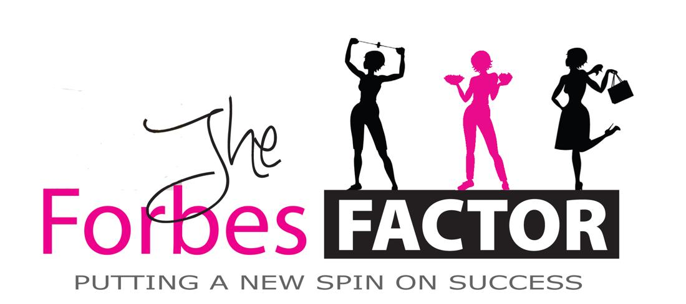

Forbes Riley: Businesswoman on Fire

BUSINESSWOMAN ON FIRE INTERVIEW WITH FORBES RILEY
Forbes Riley
1. Why did you choose to enter your present field?
I wish I could say that I was always interested in helping others achieve their dreams, but that’s just not true. For the first 20 years of my career, it was all about me: being an actress, TV host and someone who people admired. Admittedly, I was very self-centered.
Gradually, this began to change. I began to experience and overcome tragedies, which lead me to my current field. I began using the lessons that took me decades to acquire to help inspire others and get them fit, healthy and happy and realize that change can happen in an instant. This was a path that chose me.
I began my career as an actress/TV host who earned a nice level of success, acting on several TV series like Fox’s “24”, “As the World Turns”, ABC’s “The Practice” and even the lead in Fox TV’s “Fashion House.” I also hosted ESPN’s X-Games, my own national talk show on TLC called “Essentials”, shows for Disney, Discovery, HGTV,ABC-Family and even a dog game show called “Zig & Zag” on Animal Planet. Even with all of that work, I still needed “a day job,” to maintain steady cash-flow. Since I wasn’t a good waitress, like most wanna-be actors, my day job for 20 years was on the infomercial/TV home shopping circuit. I began promoting fitness equipment and healthy lifestyle solutions on live TV via QVC and HSN along with QVC in London and Canada.
This change into my new career first started when my parents (who were my best friends) died within a year of each other—both age 70—due to cancer. Then, a month after my mom passed away, a miracle happened. On the morning of 9/11, I didn’t get on a flight from Washington to California on United Flight 93 (I had been rerouted through Denver). Because of this small change, this minor shift in plans, which was only one of convenience at the time, I am alive today. That knowledge, of just missing a definite fatal experience, and the feeling that came with it, changed everything. My purpose in life began to be redefined.
Soon after, another miracle occurred. After years of trying, I gave birth to twins, which changed my world forever. Everything in my life shifted, including priorities and focus and even new opportunities began to present themselves. My newly-found career path truly became clear one day when I had the opportunity to work alongside fitness legend Jack Lalanne, promoting his juicer. His energy, verve for life and passion for food mixed with a need to help others opened my eyes, and taught me about health, nutrition and wellness in a way that I had never seen before.
In 2003, after countless years of frustration, struggling with my own weight and self-esteem issues, I decided to use my career and new found knowledge to help others. As an overweight actress and dancer I suffered through every diet and torment imaginable: losing jobs, being scorned by wardrobe mistresses and just flat out told almost daily that I was just too heavy to be successful in “show business.” I carried the weight of this rejection around with me, literally. But, as my motto has always been “you are the sum of the obstacles you overcome,” I took all of this in, and turned it around to be a
multi-million dollar fitness business devoted to getting women fit, strong, healthy, wealthy and happy.
2. What motivates you to excel in your field?
What motivates me is the joy I see and letters I receive from the people whose lives I am positively affecting. For many years now, I have been receiving thanks and letters of recommendations from people I have inspired through lectures and TV shows, but it wasn’t until I opened my 5,000 sq foot tv/production/fitness studio here in St Petersburg that I truly realized what motivates me. On October I, 2012, I launched my pilot program called the SpinGym SlimDown Challenge, and I took 30 people on a weight loss journey resulting in 703lbs lost. These challengers were not given a formal diet. Instead, they participated in weekly lectures about food and nutrition and used my product, the SpinGym, 3-times daily for 5 minutes.
When I partnered with LocalShops1 and advertised for St Pete residents to participate in the challenge, I was expecting about 20 people with 15 to 50lbs to lose; who showed up were 35 people with 40 to 200 lbs to lose. But, the challenge did not begin with addressing people’s issues with weight. The most profound thing that happened was to learn why these people were in the state they were. Many were survivors of severe trauma such as molestation, child abuse, rape and there even was a woman who credits me with her decision to not commit suicide. She said that my 10-week program and commitment to the work involved, saved her life – (for details photos and more, please visit www.unation.com/slimdown).
I have so many testimonials thanking me for all the hard work I’ve done with many pouring their hearts out about how they could never repay me for all the positive changes that have occurred in their lives.
We have even coined a new phrase – when you manifest your dreams from a belief, even if NO one else sees or believes in your dream, you have “Forbesed” it! Though to many, my work and mission looked on the surface like a weight loss program (and many did shed their extra pounds), what they found was so much more—from an emergence of self-esteem to new business ideas.
The motto I teach “how you do something, is how you do everything” takes hold of how clean your car and closets become to how you handle stress, business decisions and even the clothes you wear. Rather than “diets,” I focus on being able to change personal mindsets.
One example: I managed to motivate through my technique a woman named CK Kirkland, a 50-year-old, 2 pack a day smoker with a 35 year habit. In just one 20-minute session in front of the class, she quit smoking. It has now been 187 days AND she lost 29 lbs.
Tonight we just got a thank you from one of our study abroad classmates through our live streaming video, she lives in Edinburgh, Scotland, and she has lost 12lbs, which she credits to SpinGym and my challenge, in just 5 short weeks. It’s difficult at times for me to even imagine that the Forbes Riley fitness/weight loss class is being transmitted from St Pete and seen live in 4 different countries: Scotland, Australia, India and Canada twice a week.
What motivates me is my personal goal to help 1 million women achieve their ideal weight while also attaining a level of peace and happiness in their lives within the next 3 years. I will achieve this by continuing to spread the word that change is possible and to help people believe in themselves and to truly go for their dreams.
3. What is the greatest challenge you have faced in business and what important lesson did you learn?
That the word no means “go” not stop. I redefined N O, and it means for me: Neverending Opportunity. In business everyone WILL tell you no—No, its not a good idea, who do you think YOU are to run your own business. NO, that’s not the way it’s always been done. No, you‘re not qualified… and on and on. I learned to follow my heart and stick to brave decisions and to trust that I know more than I thought I did.
It’s a bit like Dorothy in the Wizard of Oz; I was on a long journey looking for someone to give me answers, show me the way when in truth I had it along inside, but I was afraid. There have been many hiccups along the way when it would have been a “wise” decision to pack it all in and go home. I did not. I stayed on my path.
For example, I was in a position a few years ago when US customs seized my first order of 20,000 SpinGyms and held them first for inspection, then x-ray, then for copyright approval, the for photo approval, and then for a DVD issue. After two weeks of charging me a $1,000 per day to hold my product, they threatened to send all of my inventory back to China or throw it all away.
I never stopped believing I could make this work—I could solve this problem even in the face of what seemed impossible. I pleaded, worked the system and actually found myself alongside 12 strangers I hired from Craigslist, marking off a label on EACH of the 40,000 DVDs in 20,000 SpinGym boxes by hand, while standing in the customs warehouse on hard concrete floor. We worked 10 hours a day for eight days, and we won! I just wouldn’t take “no” as a permanent barrier. I had such a strong belief and conviction that this and all things are possible. The lessons I’ve learned through experience have proven to me that hard work and perseverance DO pay off. That with great risk comes great reward, and it’s not over until… well I can’t sing, so we’ll just have to see how this all turns out! So far, so good!
The biggest personal challenge was to believe in myself. Some days as a female entrepreneur it’s just hard. Hard to get out of bed, hard to face a day with no guaranteed paycheck, hard to know you have to pay all the bills, be a good mom and still run your company. The lessons I’ve learned from THAT are to be grateful often, celebrate the small victories, say “I love you” to my family as many times as I can, and I trust that the universe provides abundantly. If you believe, give back and strive with all your heart to make the world a better place than you found it!
4. What advice would you offer women considering starting a business today?
I have 3 pieces of advice~
1) First, to not think like a woman—there is truth that business operates in a “man’s world,” and it’s imperative to play offense and defense. Now, as a woman, most of us don’t think in those terms, but men do. Learning strategies like that helped me navigate the waters a bit better. One of my personal mentors is SuperBowl Quarterback Joe Theismann. We met co-hosting a TV show in Canada and he has been a friend and supporter ever since. Prior to working with his guidance, I would lead with my heart on my sleeve, make decisions from an emotional basis and not have the end in mind when I began. As he likes to say, I am a better business woman because “I’ve become a better quarterback” and am better able to lead MY team!
By the way, he does tell me he takes great pride in being my “cheerleader” without the pom-poms.
2) Second, seek advice from someone who has been there, and find a mentor, business coach, or mastermind group that can support you. As women we tend to be more emotional in our decisions, and Joe literally coached me weekly to create actionable strategies. He also reminded me that there are advantages to being a woman and to mine those strength; our intuition, our nurturing/caring side and our determination.
3) Finally, know your personal strengths and surround yourself with people who offer complimentary services. If you are a visionary, enroll someone who can focus on details and follow-thru. If you’re an inventor, bring a salesperson/promoter onboard so you can deal with what YOU do best, and have a unified business that thrives. For me, as a dreamer/entertainer who was under-capitalized very often I was answering the phones as customer services, mailing out product, doing the creative graphics and selling the product. This was too many hats to wear. I had perseverance and determination on my side but also two small children, and I didn’t want to miss out on their lives. So, today I have a support team, and I’ve created a strong base. I learned that no one looks at a skyscraper and notices what a powerful foundation it has, but it wouldn’t stand as tall and strong if it wasn’t grounded!
5. How has your leadership and vision benefited employees, co-workers or customers?
My vision and leadership is unique in that I have never worked for anyone else and apparently lead a non-conventional ship. I believe in hard work and hard play so that we put in the hours, but we play, eat great food at the office, often take trips, and we support each other in personal ways outside of work. I am a visionary though, and sometimes it has been hard to keep employees as I often inspire them to pursue their true calling. One of my last executive assistants has opened her own business and is pursuing her dream as a graphic designer. My last IT guy is now singing and touring in a band, and even my housekeeper Amy left to pursue her painting. Although, she did leave me a 5-foot portrait of me SpinGyming on the beach. My customers, though, are the ones I share true vision with—they call, get coaching, come to seminars and actually interact with my office and often with each other. I believe in long-term relationships, but I also cherish people and encourage them to pursue their dreams and find happiness.
6. What makes you an inspiring and visionary role model for other women?
I am fearless. Now I don’t say that easily, but I do believe that if you make it past 50 and are still going, especially as a working mom – you have SOMETHING to share. For me, I have overcome so many obstacles from weight to self-esteem, having a dad who spent my entire high school years in the hospital having 15 different operations, we had no money and survived a crazy bleak time. When other kids were going to dances and cheerleading I was helping my family survive one day at a time.
As a woman, to build and create myself into what I believe has been my own personal miracle—I share that story openly. I share the story that NO ONE wanted my SpinGym when I started, and I dealt with a great deal of rejection for the past 3 years. And I won! On January 28th of 2013, I sold LIVE on HSN in just 24 hours – 61,000 SpinGyms in 7 different colors and my additional DVD workouts and a host of other accessories. The total sale for the day was just over $1.4 million, and this for a product NO ONE wanted or believed in, except me and my husband.
I did it—that’s what makes me an inspiring role model. Anyone can talk a good game, but I stand proud and share all my short-comings, show my vulnerability and even my weakness. That makes me relatable and real. I’m honest, and I share my journey with the spirit and knowledge that if I can do it, so can you! And, perhaps you can even do it better with me as your role model so you won’t waste all the time I did and make so many costly mistakes along the way.
7. What are your goals for future achievement?
One of my goals was to get SpinGym into the hands of 1milion people, and I am now more than half way there. We have begun a program so that others can make money promoting and selling SpinGym along with the Fit with Forbes method of total mind/body transformation—truly finding health, wealth and happiness. One of my goals is to once again have a national talk show. Imagine the Rachel Ray or Suzie Orman of health, fitness and success in a daytime talk arena right before or after Dr Oz. I have two new books coming out called “e.a.t. – a Journal for What You Eat and for What’s Eating You” as well as “Sleeveless in 6 – 6 Minutes, 6 Days, 6 Weeks to a Fit New You!”
We are gearing to do more production in our studio to help local businesses here in St. Petersburg – to create promotional videos, work on their brand messaging, and offer motivational seminars – wouldn’t it be a hoot to get St. Petersburg to be named the “Fittest City in the Country.”
As well we hold our weekly SlimDown Challenge classes at the studio and plan to produce more workout videos for the SpinGym series. I also am very aware that I only have 6 or so more years with my twins before they might not want to take a vacation with mommy; so a very important goal is to carve out significant and meaningful family time. The key to a happy life is balance.
8. What community activities (outside of your direct business) do you participate in?
I have always been very community-minded, and I believe that you only truly receive when you give back. Prior to my moving to St. Petersburg, I lived with my husband and family in Los Angeles. We worked very diligently with the Big Brothers/Big Sisters of Greater Los Angeles, and when our foster son of 12 years Dexter was murdered on a Sunday morning in LA, we created the Dexter Fund to help at risk youth in the community. For more than 15 years I have supported and worked with Dress for Success (first in LA) and now here in Tampa. Since I moved to St Pete, I have been involved and supported Clothes to Kids to get school age children, who have been removed from their homes, school clothes so they can thrive and get an education with dignity. I also host a wide variety of charity events from Make a Wish, to Dancing with the Stars Tampa Bay, Live Your Legacy to the Achievable Foundation. Since I began SpinGym, we have been manufacturing Pink SpinGyms and giving a portion of the proceeds to Gulfport’s Cancer Charity to support survivors.
As a company we support local walks and have been involved here in St. Petersburg with the American Heart Association, Mrs. World’s organization Vision for the Blind (April Lufriu is a local Tampa resident) and the CureSearch walk to name a few.